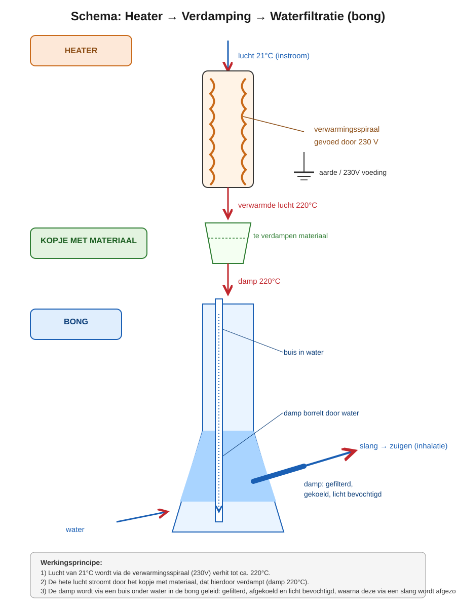

Wat is het verschil tussen roken en verdampen?
Bij roken steek je plantmateriaal in brand: dat gebeurt bij temperaturen van boven de 230 °C. Daarbij verbrandt niet alleen de werkzame stof, maar ook de plantaardige "drager" eromheen — met rook, teer en verbrandingsstoffen als gevolg.
Bij verdampen verhit je het plantmateriaal veel voorzichtiger. THC en CBD gaan al bij een relatief lage temperatuur over van vaste/vloeibare vorm naar damp. Zo adem je alleen de werkzame stof in — de rest van het plantmateriaal ("de verpakking") blijft gewoon liggen, verkleurd maar niet verkoold.
Roken
Verbranding boven 230 °C. Plantmateriaal + werkzame stof gaan samen op in rook.
Verdampen
Verhitting tussen 180–220 °C. Alleen de werkzame stof verdampt, de drager blijft over.
Restproduct
Na het verdampen hou je licht gebruinde kruiden over — geen as, geen verbrande rook.
🌡️ Bij welke temperatuur gebeurt wat?
Elke werkzame stof in cannabis heeft een eigen "kookpunt" — het punt waarop hij verdampt in plaats van vast of vloeibaar te blijven. Blijf je onder deze temperaturen, dan gebeurt er niets; kom je er te ver bovenuit, dan verbrandt het plantmateriaal.
Boven de 230 °C begint het plantmateriaal daadwerkelijk te verbranden. Dan ontstaan dezelfde schadelijke verbrandingsstoffen als bij roken. Een goede verdamper houdt de temperatuur daarom nauwkeurig ónder deze grens.
📊 Efficiëntie: roken vs. verdampen
Bij het roken van cannabis gaat het grootste deel van de werkzame stof simpelweg verloren aan de omgevingslucht en aan verbranding. Bij verdampen is die verhouding vrijwel omgekeerd.
🔥 Roken
💨 Verdampen
| Aspect | Roken | Verdampen |
|---|---|---|
| Verbruik van kruid | Veel nodig | Veel minder nodig |
| Kosten | Hoger op termijn | Aanzienlijk goedkoper |
| Smaak | Verbrande / rokerige smaak | Volle, zuivere smaak |
| Schadelijke stoffen | Teer, koolmonoxide, kankerverwekkende stoffen | Vrijwel geen |
| Geur | Sterke, blijvende rooklucht | Lichte, snel vervliegende geur |
⚙️ Zo werkt een verdamper
Een verdamper verhit lucht (of het kruid direct) tot een nauwkeurig ingestelde temperatuur. Deze warme lucht stroomt langs of door het plantmateriaal, waardoor alleen de werkzame stoffen verdampen — zonder dat het materiaal zelf in brand vliegt.

Heater
Lucht van kamertemperatuur (~21 °C) wordt via een verwarmingsspiraal verhit tot circa 220 °C.
Kopje met materiaal
De hete lucht stroomt door het kopje met fijngemalen plantmateriaal (THC/CBD), dat hierdoor verdampt.
Damp naar de bong
De damp van circa 220 °C wordt via een buis onder water in de bong geleid.
Waterfiltratie
De damp borrelt door het water: dit filtert, koelt en bevochtigt de damp voordat je hem inademt.
Slang / inhalatie
Via de slang zuig je de gefilterde damp naar binnen.
Restproduct
Het overgebleven plantmateriaal (de "drager") is licht gebruind, maar niet verbrand.
✨ Waarom verdampen zoveel beter is
Veel goedkoper
Je hebt aanzienlijk minder kruid nodig voor hetzelfde effect.
Lekkerder
Volle, zuivere smaken in plaats van een verbrande rooksmaak.
Gezondheidswinst
Geen verbrandingsproducten zoals teer, koolstofmonoxide of kankerverwekkende stoffen.
Geen verbranding
Blijft onder de 230 °C, dus er is simpelweg geen vuur en geen rook.
Nauwkeurig doseren
Instelbare temperatuur = controle over welke stoffen vrijkomen.
Milde geur
Damp vervliegt snel en blijft niet hangen zoals rooklucht.
Kortom: verdampen haalt eruit wat je wílt (THC en CBD), en laat achter wat je niet nodig hebt — zonder de schadelijke bijproducten van verbranding.